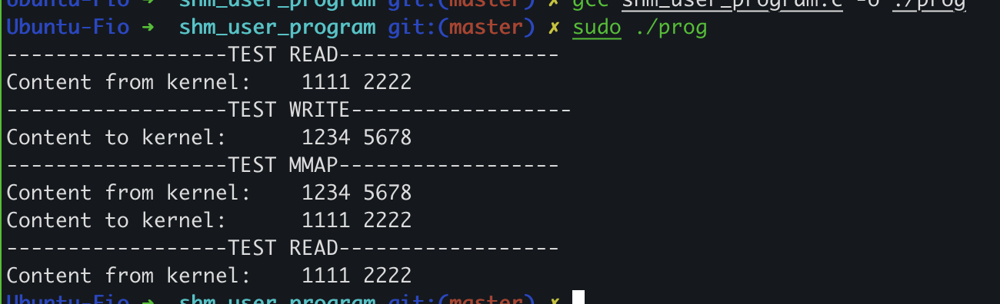

创建内核态与用户态的共享内存
实现内核与应用程序共享内存的常见方法是内核创建一个模拟设备在驱动中实现文件系统接口来提供共享内存，应用程序通过正常的文件系统API读写共享内存。
内核创建设备
在kernel里面，可以创建一个最简单的设备并使用文件系统接口实现共享内存。我选择在drivers/char目录下新增加一个驱动来作为模拟设备提供共享内存。
增加一个驱动，实际上是一个内核模块，要实现两个函数，分别是作为module_init的shm_kernel_driver_init与作为module_exit的shm_kernel_driver_exit。
shm_kernel_driver_init负责创建设备并添加到dev,sys文件系统中。这个代码比较通用，但是平时很少需要自己写，这里贴出来作为参考:
static int __init shm_kernel_driver_init(void)
{
/*Allocating Major number*/
if((alloc_chrdev_region(&dev, 0, 1, "shm_kernel_driver_dev")) <0){
pr_err("Cannot allocate major number\n");
return -1;
}
/*Creating cdev structure*/
cdev_init(&shm_kernel_driver_cdev,&fops);
/*Adding character device to the system*/
if((cdev_add(&shm_kernel_driver_cdev,dev,1)) < 0){
pr_err("Cannot add the device to the system\n");
goto r_class;
}
/*Creating struct class*/
if((dev_class = class_create(THIS_MODULE,"shm_kernel_driver_class")) == NULL){
pr_err("Cannot create the struct class\n");
goto r_class;
}
/*Creating device*/
if((device_create(dev_class,NULL,dev,NULL,"shm_kernel_driver")) == NULL){
pr_err("Cannot create the Device\n");
goto r_device;
}
/*Init shm*/
printk("----------------INIT SHM------------------\n");
shm = kmalloc(PAGE_SIZE, GFP_KERNEL);
printk("shm kernel va: %llx\tpa: %llx\n", (u64)shm, (u64)virt_to_phys(shm));
*(int *)shm = 0x1111;
*(int *)(shm + (1 << 8)) = 0x2222;
printk("%s %d Content to user: %x %x\n",
__func__, __LINE__, *(int *)shm, *(int *)(shm + (1 << 8)));
return 0;
r_device:
class_destroy(dev_class);
r_class:
unregister_chrdev_region(dev,1);
return -1;
}
创建设备后，设备会出现在devfs中（/dev/shm_kernel_driver)。
我在这个函数中还创建并初始化了一个4KB大小的页，它将被用来作为共享内存。
至于shm_kernel_driver_exit就是释放shm_kernel_driver_init中创建的数据结构。
内核实现共享内存
static struct file_operations fops =
{
.owner = THIS_MODULE,
.open = shm_kernel_driver_open,
.release = shm_kernel_driver_release,
.read = shm_kernel_driver_read,
.write = shm_kernel_driver_write,
.mmap = shm_kernel_driver_mmap,
};
我实现了三个文件系统接口让应用程序读写共享内存，分别是read，write，mmap。其中read和write通过内存拷贝的方式让用户访问内核buffer里面的数据，这使用了copy_to_user，copy_from_user。mmap采用两种方式实现分别是内核接口remap_pfn_range和手动改页表 。下面分别进行介绍:
Read & Write
static ssize_t shm_kernel_driver_read(struct file *filp, char __user *buf, size_t len, loff_t *off)
{
nbytes = copy_to_user(buf, shm, PAGE_SIZE);
return 0;
}
static ssize_t shm_kernel_driver_write(struct file *filp, const char __user *buf, size_t len, loff_t *off)
{
nbytes = copy_from_user(shm, buf, PAGE_SIZE);
return 0;
}
read和write直接使用copy_to_user和copy_from_user，这无须多言。
Mmap
read和write是通过内存拷贝的方式让应用程序访问到内核中的数据，这并不是真正意义上的共享内存。接下来将使用两种方式实现mmap接口，能够让用户直接访问到内核buffer所在的页。
Reamp_pfn_range
static int shm_kernel_driver_mmap(struct file *filp, struct vm_area_struct *vma)
{
if(remap_pfn_range(vma,
vma->vm_start,
virt_to_phys(shm)>>PAGE_SHIFT,
vma->vm_end - vma->vm_start,
vma->vm_page_prot))
{
return -EAGAIN;
}
return 0;
}
使用remap_pfn_range函数会将共享内存的物理页面直接添加到用户进程的页表中。但remap_pfn_range要求给整个vma映射物理内存，如果我们只想将这个vma中的一个页映射到内核的buffer上，应该如何做呢？接下来介绍如何直接修改进程的页表实现共享内存。
改页表
static u64 update_pgt(struct vm_area_struct *vma, u64 uva, u64 pfn)
{
pgd_t *pgd;
p4d_t *p4d;
pud_t *pud;
pmd_t *pmd;
pte_t *ptep, pte;
pgd = pgd_offset(current->mm, uva);
printk("[walk_pgt] pgd: %llx\n", (unsigned long long)pgd);
p4d = p4d_alloc(current->mm, pgd, uva);
printk("[walk_pgt] p4d: %llx\n", (unsigned long long)p4d);
pud = pud_alloc(current->mm, p4d, uva);
printk("[walk_pgt] pud: %llx\n", (unsigned long long)pud);
pmd = pmd_alloc(current->mm, pud, uva);
printk("[walk_pgt] pmd: %llx\n", (unsigned long long)pmd);
ptep = pte_offset_kernel(pmd, uva);
printk("[walk_pgt] ptep: %llx\n", (unsigned long long)ptep);
set_pte(ptep, pte_mkspecial(pfn_pte(pfn, vma->vm_page_prot)));
pte = READ_ONCE(*ptep);
pr_info("[walk_pgt] uva: %llx pfn: %llx updated pte: %llx\n",
uva, pfn, (u64)pte_val(pte));
return 0;
}
static int shm_kernel_driver_mmap(struct file *filp, struct vm_area_struct *vma)
{
vma->vm_flags |= VM_IO | VM_PFNMAP | VM_DONTEXPAND | VM_DONTDUMP;
update_pgt(vma, vma->vm_start, virt_to_phys(shm) >> PAGE_SHIFT);
return 0;
}
在这里我们实现了走页表与分配页表的逻辑。理解这个代码需要对内核里的一些内存页表术语有所了解。
目前Linux采用了5级页表，如下图所示，从大到小依次为PGD, P4D, PUD, PMD, PTE。

修改内核Config
因为我们新增加了一个驱动和源码文件。需要修改Makefile来让这个文件被编译进入内核，并修改Kconfig让用户可以选择这个新增加的共享内存模拟设备的驱动。
修改完成之后，需要make menuconfig选中新添加的设备。
修改示例(需要注意这里的命名需要一致，都是SHM_KERNEL_DRIVER):
Kconfig
config SHM_KERNEL_DRIVER
tristate "TTY driver for shared memory"
#depends on EXPERT && TTY
default y
help
If you say Y here, the support for expose shared memory.
If unsure, say N.
Makefile
obj-$(CONFIG_SHM_KERNEL_DRIVER) += shm_kernel_driver.o
用户程序
应用程序很简单，只需要先根据路径名打开文件，再使用fd读写即可。以mmap为例:
shm_fd = open("/dev/shm_kernel_driver", O_RDWR);
buf = malloc(0x1000);
int test_shm_mmap(int shm_fd, void *buf)
{
printf("------------------TEST MMAP------------------\n");
buf = mmap(NULL, 0x1000, PROT_READ|PROT_WRITE, MAP_SHARED, shm_fd, 0);
printf("Content from kernel:\t%x %x\n",
*(int *)buf, *(int *)(buf + (1 << 8)));
*(int *)buf = 0x1111;
*(int *)(buf + (1 << 8)) = 0x2222;
printf("Content to kernel:\t%x %x\n",
*(int *)buf, *(int *)(buf + (1 << 8)));
return 0;
}
验证
用户程序输出:

内核输出:

参考
https://github.com/iaGuoZhi/Virtualization/tree/master/kernel-user-shm
https://github.com/iaGuoZhi/linux/tree/shm_kernel_driver